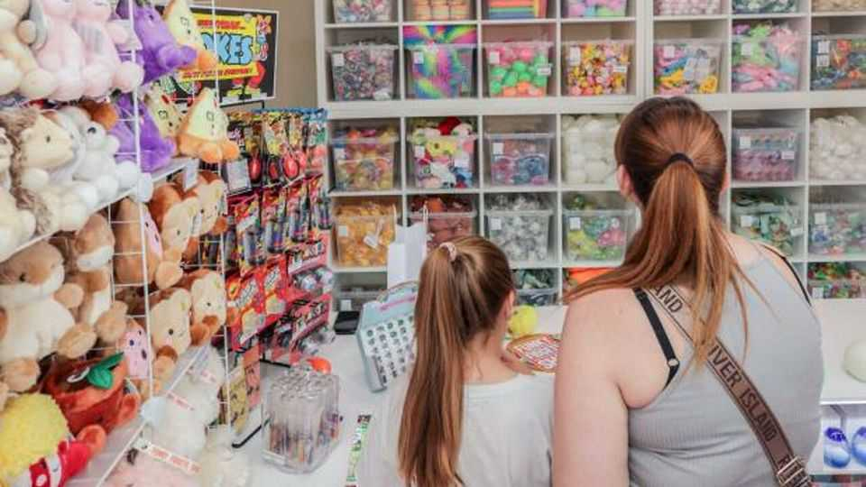

How TikTok Shop is helping create young British entrepreneurs
Could it also help revive the high street?

Oct 1st 2026
IT’S A QUIET morning in Darlington, County Durham. But business inside Funky Fidgets, a sensory-toy shop, is brisk. Postmen show up for the first of three daily collections. A customer arrives, dispatched by his daughter to buy the latest stress ball. It is hard to believe that the firm, which ships worldwide and has 14 staff, was founded by an 11-year-old.
Alex, who started selling toys online during the covid-19 pandemic, is one of a growing number of young British entrepreneurs selling on TikTok, a Chinese video app. TikTok Shop, which lets users buy products without leaving the app, is the source of most of Funky’s orders. Around 300,000 small businesses in Britain use it; most of its sellers joined in the past year.
Britain has proved fertile ground for this new kind of shopping. Its high streets have declined faster than those of its European neighbours, and British consumers have embraced Chinese-style live commerce. Around 57% of Gen Z and Millennials watch shopping streams such as TikTok Shop live, where sellers can broadcast themselves packing orders and chatting to customers. In turn, viewers can watch staff pick and pack their items in real time. And it’s not only youngsters who are hooked. Mason Miller of The Fat Butcher, a butcher’s shop some 70km north of Funky Fidgets, reckons 60% of its customers on TikTok are 40- to 60-year-old women.
More surprising is that those online followers are willing to turn up to physical shops. Funky Fidgets, which has half a million followers on TikTok, can attract four-hour queues outside its shop on Saturdays. “We bring a lot of tourism into Darlington,” says Melissa Brunskill, who for now runs the shop day-to-day while her daughter is at sixth-form college. It is an early sign that this sort of commerce could give Britain’s ailing high streets a lift.
Now 16, Alex remains closely involved in the business. She designs products and handles customer service, all while studying accountancy. She has big plans. “I want to keep it as small as I can,” says her mother. “She wants to have stores all over the world.” ■